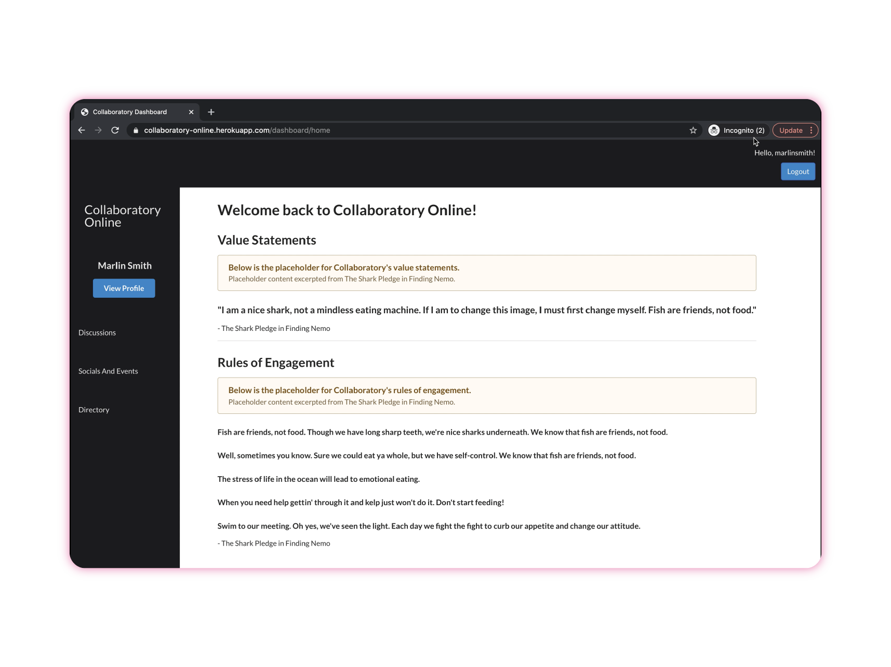

Web application that helps non-profit organizations in Southwest Florida to connect

Project overview
The client: Southwest Florida Community Foundation
Southwest Florida Community Foundation, also known as Collaboratory, is a non-profit organization that helps fund and connect other organizations within the Southwest Florida region.
Organizations in this region are driven by various causes ranging from Animals, Climate Change, Community Design, Education, and many more.
The project: Building Collaboratory Online
Our client is looking forward to an information hub and centralized location online to enhance connectivity outside of Collaboratory’s physical space.
The web-based application would be a new means of connection and a supplement for existing in-person and online gatherings.
Role
UX designer, researcher, and Django + React developer from Jan - April 2021
Team
Victoria Cope (Product owner), Jason Chou (Scrum master), Mariah Jacobs (Build master), Josue Figueroa (UX researcher)
Methods & tech
Agile scrum and UX
Django, React, and MariaDB
Solution
How did we turn this into a product?
We created an online space that allows users to post and navigate content such as community events. Users can also search for non-profits and network with individuals involved in different organizations.
Connecting with organizations lets others find and interact with your information.
Post, view, and filter discussion threads
View and create posts tagged under different discussion categories.
Post and view upcoming events
Browse and create events with details like the location and RSVP information.
Find organizations and people
Initiate conversations and make connections outside of formal gatherings.
Design and development
Agile project management
We followed the agile scrum framework to help us manage the project. After each sprint, we would have a working MVP product to showcase on sprint reviews with our client involved. This helped us identify blockers, ensure we don’t delay the entire development process, and most importantly, communicate what we have achieved.
Agile project management process
Throughout the sprints, we used Airtable to store user stories and track progress. We leveraged customizable features to display feature information, priority, acceptance criteria, and velocity estimates.
We used Airtable to store product backlog and track dev process
Research
3 interviews with end users
After collecting background information from our clients, we had a better understanding of the issues that people were facing. Without a user-friendly tool that allows people to connect outside of formal gatherings, people rely much on our clients and that has been a bottleneck for them to network freely.
User needs collected from stakeholders
To further validate what we gathered from our clients, we conducted 3 remote interviews to learn more about participants’ first hand experience with the platforms used, communication preferences, and pain points. The interviews helped us identify what needs were not being met.
1.
Connecting on an individual basis is hard.
“It takes a lot more initiative on the individual’s part when it's virtual versus face-to-face.”
2.
Current tools are too complicated.
“...just one another thing to have to learn when folks are trying to keep their head above water right now.”
3.
People rely on community staff to network.
“I want to eliminate my role as a bottleneck between changemakers in different organizations.”
Comparative analysis
We identified desirable features from conversations with our client and grouped them into “must-haves” and “nice-to-haves.” We also collected tools previously used from user interviews to see where the tools fell short or worked well. With that, we documented findings on a Miro board and facilitated conversations with our clients as we moved forward to prioritize the MVP features.
Comparative analysis on the tools our stakeholders have tried out before
Design
Visualizing ideas with wireframes
Based on insights gathered from comparative analysis and stakeholder interviews, we came up with 8 key features and created wireframes to visualize our ideas.
Wireframes created to visualize stakeholder needs
Communicating through mid-fidelity prototypes
We built a temporary design system for the project and pushed wireframes to mid-fidelity prototypes. Design decisions were made based on stakeholder feedback.
Check out interactive prototype built with Figma here!
Mid-fidelity prototypes created to communicate project directions with stakeholders
Conducting usability tests with interactive prototypes
We conducted 3 usability tests with target users to validate the solutions we came up with. Interactive prototypes let users get a feel of how the real product works.
Excerpt of feedback from usability tests
Development
Researching the unknown
Among 5 of us in the team, some had more experience with Python while others are more comfortable with javascript frameworks. To leverage technical skills everyone brought to the table, we ended up deciding to go with a hybrid React frontend and Django backend method with Mariah DB storing user data.
Full-stack development technologies used in this project
How design prototypes helped with development
As the designer and developer on the team, I found having user flows with design prototypes included was tremendously helpful. Even though each teammate was working on different features, we were still able to develop a product that followed the same design styles.
Simplified user flow created to keep the team on the same page
Minimum viable product
Marketing video
The minimum viable product comes with 5 key features: 1) create account and login, 2) connect profile with an organization, 3) post, view, and filter discussion threads, 4) post and view upcoming events, and 5) find organizations and people.
Marketing video created with Clipchamp
Takeaways
Adopt remote agile
Agile practices worked well asynchronously! As a group, we benefited from remote pair coding sessions, virtual standups, and frequent Slack communication. It wasn’t ideal, but we embraced the opportunity to leverage different technologies and time differences to make things work.
Look before you jump
Before jumping into writing any code, devote time to understanding the feature, exploring potential third-party packages, and going through tutorials in a separate testing environment. This can save a ton of time from writing non-usable code that could impact other parts of the project.
Detailed handoff documentation is a must
Documenting findings, design iterations, and user feedback is a great practice. Chances are we all forget how decisions are made when we move on to development. This keeps the team on the same page when developing features.
Thank you for scrolling
See you in other projects
ECoach
Web | UX design | Internship
Improving user experience for a tailored educational communication system